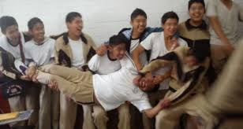

SEC. "BENITO JUAREZ" Esta etapa, sin duda, es la mejor que eh vivido hasta el momento, ahi conoci a mis mejor amigos hasta el dia de hoy, que ahora considero como de mi familia, hemos compartido todo tipo de experiencias.
Tuve algunos profes super pesados pero algunos tambien eran muy buena onda.
